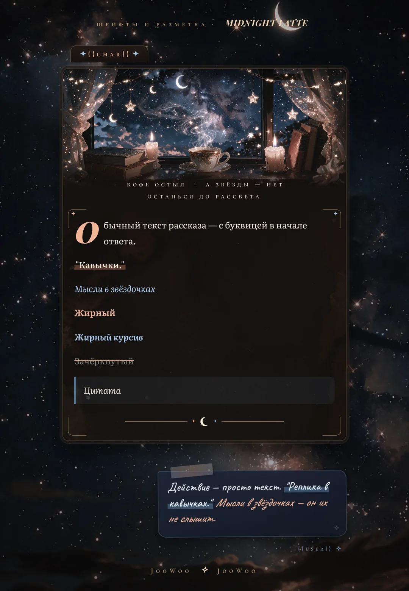
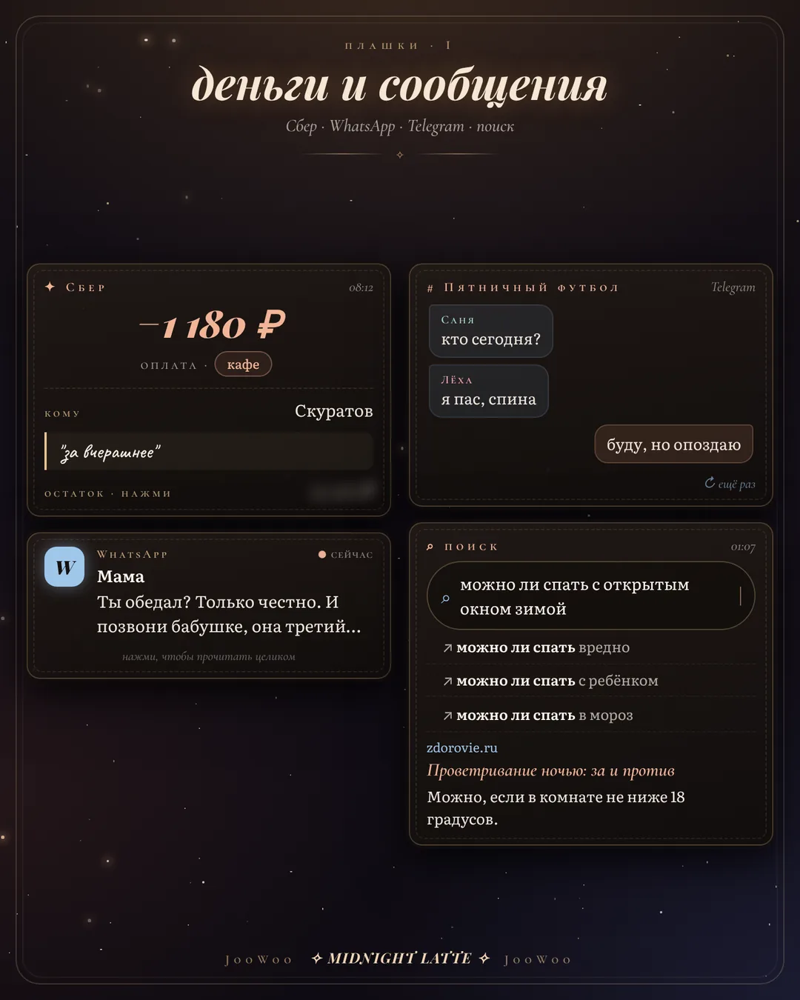
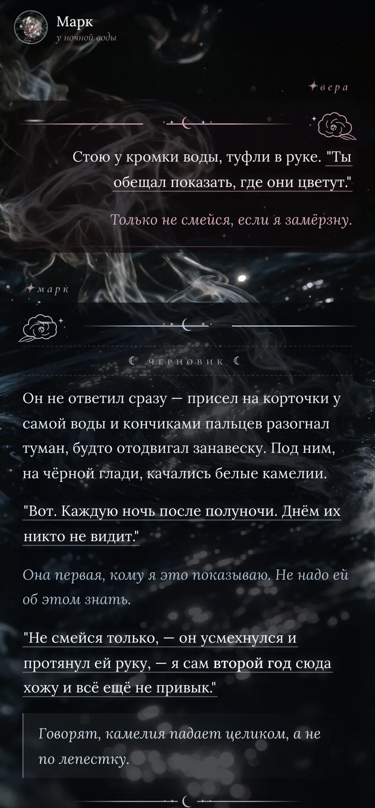
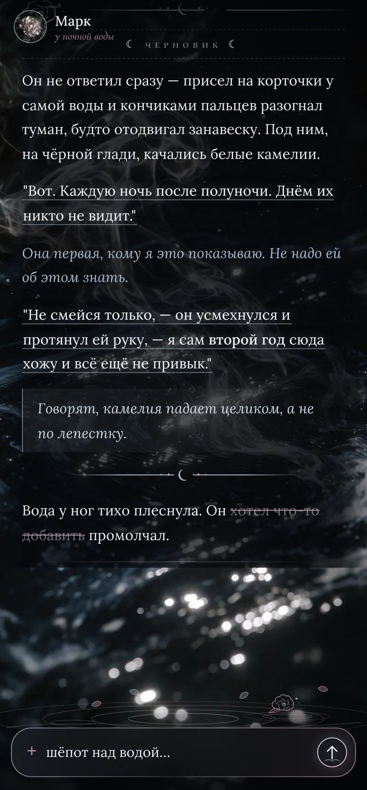
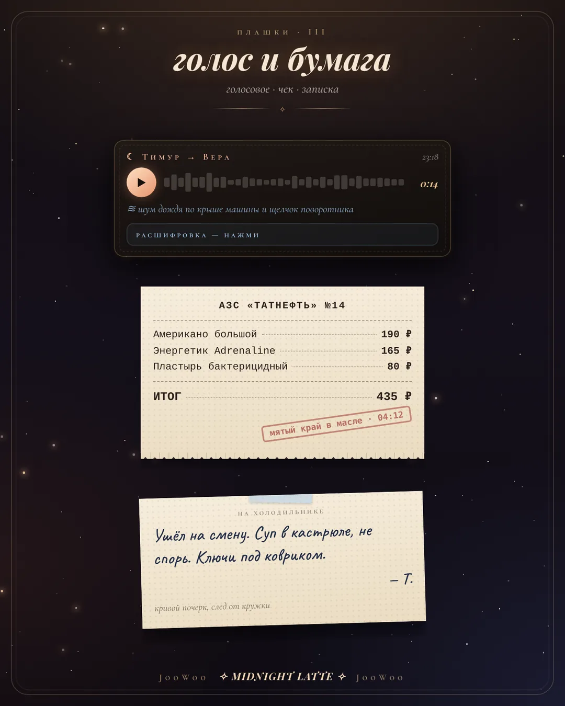
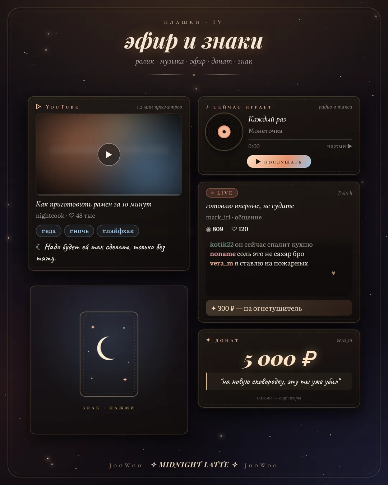

атлас историй · tavo
Темы, пресеты, плашки и плагины для живых ролевых историй в Tavo. Всё написано с нуля, проверено на своих чатах и обновляется.


i · темы
Каждая тема — это оформление чата, своя шапка сообщений и подсветка реплик. Ставятся в Tavo через импорт файла .thm.





ii · пресет
Пресет, в котором у персонажа своя жизнь. Он думает перед ответом, не пишет за тебя и не лезет туда, куда его не звали.
С незнакомкой он не пишет первым и не ищет встреч. С близкими — может. С парой — полная инициатива.
Бытовая физика, сбивчивая речь, занятые руки, ошибки восприятия через собственную слабость.
Длинный список штампов, которых модель избегает: от «желваков» до «ночь только начиналась».
План ответа перед текстом: что сейчас между ними, чего он хочет, куда сдвинется сцена.
iii · плашки
Оплата, мессенджеры, такси, доставка, музыка, эфир, чек, записка, карта таро — модель пишет строки, регекс рисует живую плашку. Их можно нажимать.


iv · плагины
Плагины ставятся в Tavo отдельно. Свежие версии — в Telegram.

Картинки по ходу истории через NovelAI или Tensor, несколько LoRA сразу, внешность людей из чата — семья, друзья, работа.

Дневник и подсказки к сцене. Работает с героем любого пола.

Облегчённый чат, когда хочется писать, а не настраивать.
v · гайд
"Реплика" | "реплика" — только прямые кавычки |
*мысль* | мысль — персонаж её не слышит |
**жирный** | жирный |
~~зачёркнутый~~ | |
> цитата | цитата |
--- | разделитель |
Действие за себя пиши обычным текстом. Цитату и разделитель — отдельной строкой с пустыми строками вокруг.